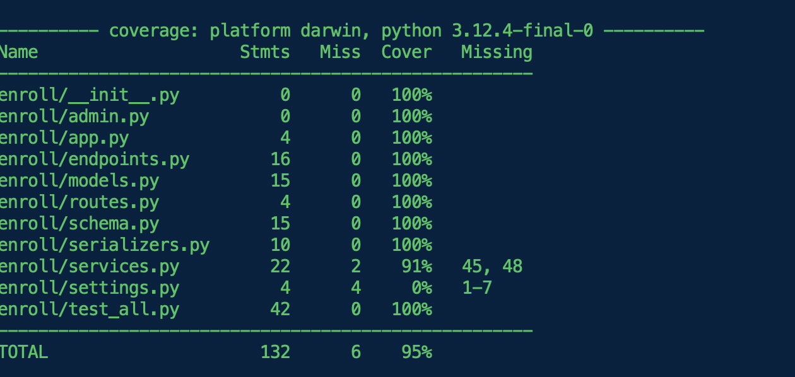

测试
unfazed 非常注重代码的鲁棒性，并且将 方便测试 放在很高的等级。unfazed 默认使用 pytest 作为测试组件。
在 unfazed 文件结构设计下，unfazed 强烈推荐开发者至少测试以下两部分内容
- 测试 services.py 中所有被 endpoints 引用的方法
- 测试 routes.py 中所有的接口是否能正常访问
第一步的目的是保证业务逻辑能正常进行，第二步是保证接口能正常访问
编写测试代码
# src/backend/enroll/test_all.py
import typing as t
import pytest
from unfazed.core import Unfazed
from unfazed.test import Requestfactory
from enroll import models as m
from enroll import services as svc
@pytest.fixture(autouse=True)
async def setup_enroll() -> t.AsyncGenerator[None, None]:
await m.Student.all().delete()
await m.Course.all().delete()
# create more than 10 students
for student in [
"Alice",
"Bob",
"Charlie",
"David",
"Eve",
"Frank",
"Grace",
"Helen",
"Ivy",
"Jack",
"Kevin",
]:
await m.Student.create(name=student, age=20)
for course in ["Math", "Physics", "Chemistry"]:
await m.Course.create(name=course, description=f"description of {course}")
yield
await m.Student.all().delete()
await m.Course.all().delete()
async def test_enroll_services() -> None:
# test list_student
ret = await svc.EnrollService.list_student(1, 10)
assert len(ret["data"]) == 10
ret = await svc.EnrollService.list_student(2, 10)
assert len(ret["data"]) == 1
# test list_course
ret = await svc.EnrollService.list_course(1, 10)
assert len(ret["data"]) == 3
ret = await svc.EnrollService.list_course(2, 10)
assert len(ret["data"]) == 0
# test bind
student = await m.Student.get(name="Alice")
course = await m.Course.get(name="Math")
ret = await svc.EnrollService.bind(student.id, course.id)
assert ret["status"] == "ok"
async def test_enroll_endpoints(unfazed: Unfazed) -> None:
async with Requestfactory(unfazed) as rf:
# test hello
resp = await rf.get("/enroll/hello")
assert resp.status_code == 200
# test list_student
resp = await rf.get("/enroll/student-list")
assert resp.status_code == 200
# test list_course
resp = await rf.get("/enroll/course-list")
assert resp.status_code == 200
student = await m.Student.get(name="Bob")
course = await m.Course.get(name="Math")
resp = await rf.post(
"/enroll/bind", json={"student_id": student.id, "course_id": course.id}
)
assert resp.status_code == 200
解释：
- setup_enroll fixture 用于初始化测试环境，创建 11 个学生和 3 门课程
- test_enroll_services 测试 services.py 中的所有方法
- test_enroll_endpoints 测试 routes.py 中的所有接口
运行测试
make test
# or
pytest
显示

在实际的业务场景中，可能很难达到 100% 的测试覆盖率，但请尽量往这个方向努力。